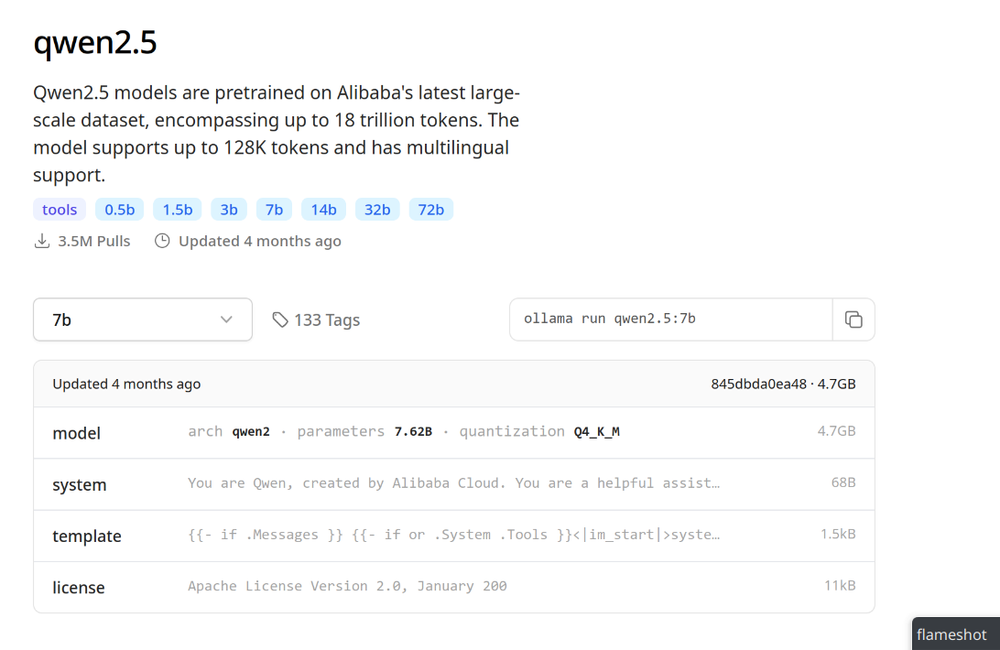

Publicado en 2025
Finding the Best Mastodon Client for Android
- 2025-10-08
Navigating the Fediverse is an experience that largely depends on the client you use. In my case, as an Android user, I’ve gone through several applications looking for the one that best fits my workflow and offers a comfortable and stable user experience. This has been my journey through three of the most popular clients: Tusky, Megalodon and Moshidon.
Buscando el mejor cliente de Mastodon para Android
- 2025-10-08
Navegar por el Fediverso es una experiencia que depende en gran medida del cliente que utilices. En mi caso, como usuario de Android, he pasado por varias aplicaciones buscando la que mejor se adapte a mi flujo de trabajo y me ofrezca una experiencia de usuario cómoda y estable. Este ha sido mi viaje a través de tres de los clientes más populares: Tusky, Megalodon y Moshidon.
Conector MySQL para Python en Manjaro
- 2025-05-04
Ahora que uso
Manjaro en lugar de Ubuntu,
uno de los problemas que encontré para adecuar el entorno de desarrollo que uso
en mi trabajo, es que el conector de MySQL para Python MySQLDb depende de
libmysqlclient-dev, que no está disponible en Manjaro. Te cuento cómo
solucioné el problema.
¿Es Manjaro para novatos?
- 2025-05-01
He usado Manjaro desde hace 7 meses, y me ha apasionado. Me gusta disponer de las novedades rápido, sin el sacrificio de la estabilidad (cosa que me sucedía en los intentos que tuve en Arch Linux), su gestor de hardware y de núcleos Linux me parecen muy buenas utilidades. Además, pamac es una herramienta muy útil para gestionar paquetes en Manjaro, mucho más amigable que pacman de Arch Linux, y con cierta similitud con apt de Debian/Ubuntu. La documentación propia de Manjaro, sumada a la excelente documentación de Arch Linux, hacen que sea una distribución muy fácil de usar, y me atreveré a decir, que esta facilidad es extendida para novatos.
Ecosistema Rust para la terminal Linux
- 2025-04-29
Además de mi interés personal por este lenguaje, también me interesa el ecosistema de herramientas que se han desarrollado en Rust para la terminal Linux y para el soporte de otros lenguajes de programación (como su impacto en Python, que es mi lenguaje principal de desarrollo).
Install Docker on Manjaro
- 2025-04-23
Now that I use Manjaro, it’s worth reviewing the steps to install Docker on Manjaro.
Instalar Docker en Manjaro
- 2025-04-23
En el pasado publiqué un artículo de como instalar y usar Docker en Ubuntu con Snap y ahora que uso Manjaro vale la pena revisar los pasos para instalar Docker en Manjaro.
Aprendiendo Rust: Parte 1 - Uso básico de cargo, variables y flujos de control
- 2025-03-31
Hace casi dos años me propuse aprender Rust, pero no tuve tiempo o realmente tenía poca disciplina para seguir adelante. Ahora, estoy en firme con el propósito para este 2025 y aquí estoy tomando notas, haciendo algunos ejercicios e iniciando un proyecto. Respecto a estas notas, deben considerarse como notas personales, y bueno cubro detalles de lo básico para iniciar con un proyecto con cargo, imprimir en consola, asignar variables, tener claros los tipos de variables y hacer flujos de control (todavía sin manejo de errores).
Zed: un editor rápido y moderno de código abierto
- 2025-03-27
zed es un editor de código y texto de código abierto, diseñado para ser rápido y fácil de usar. Está construido en Rust y utiliza una interfaz de usuario moderna e intuitiva. De momento es soportado de forma oficial en Linux y macOS, pero se está trabajando en su implementación para Windows (aunque existen versiones experimentales). Te contaré cómo instalarlo y algunas de sus características.
Zed: A fast and modern open source editor
- 2025-03-27
zed is an open-source code and text editor, designed to be fast and easy to use. It is built in Rust and uses a modern and intuitive user interface. It is currently officially supported on Linux and macOS, but work is underway for Windows implementation (although experimental versions exist). I will tell you how to install it and some of its features.
Hallucination in Artificial Intelligence
- 2025-02-13
Robots also dream. Yes, and they dream while awake. The hallucination in language models (or artificial intelligences) is inevitable. Not everything generated by an AI can be trusted, and you should have appropriate criteria to judge the information produced. In general, AI is a good assistant, but only that—its purpose is to assist you, and the final decision must always be yours. Here I will illustrate why this is important.
Alucinación de la inteligencia artificial
- 2025-02-13
Los robots también sueñan. Sí, y sueñan despiertos. La alucinación en los modelos de lenguaje (o inteligencias artificiales) es inevitable. No todo lo que genera una IA es confiable y debes tener criterios adecuados para juzgar la información generada. En general, la IA es un buen asistente, pero solo eso, te debe asistir y la última palabra siempre debe ser tuya, y aquí te ilustraré la razón.
Install Your Local AI Assistant
- 2025-02-02
If you wish to install your own artificial intelligence assistant on your device, free of charge, without creating accounts, exposing your data, and all under your control, this is possible thanks to Ollama. Available for Windows, Linux, and Mac. I will explain how you can obtain the assistants for Qwen, Llama, and Deepseek.
Instala tu asistente local de IA
- 2025-02-02
Si deseas instalar tu propio asistente de inteligencia artificial en tu equipo, de forma gratuita, sin crear cuentas, exponer tus datos y todo bajo tu control, esto es posible gracias a Ollama. Disponible en Windows, Linux y Mac. Te explico cómo disponer de los asistentes de Qwen, Llama y Deepseek.
No module named pkg_resources found in UV environment
- 2025-01-26
If, like many others, you have already started migrating to the package manager
uv, you might have encountered the
ModuleNotFoundError: No module named 'pkg_resources' issue. Don’t worry, this
won’t be an obstacle to continuing the migration.
Módulo pkg_resources no encontrado en ambientes UV
- 2025-01-26
Si como muchos, ya has iniciado la migración al gestor de paquetes
uv, puede que te hayas encontrado con el problema de
ModuleNotFoundError: No module named 'pkg_resources'. No te preocupes, esto no
será un obstáculo para continuar la migración.
Planetary alignment 2025
- 2025-01-19
We began the year 2025 with a couple of important astronomical events, and one of these is the planetary alignment. The other event is the maximum brightness of what has been called the comet of the century, C/2024 G3 (ATLAS), but let’s talk about the planetary alignment.

Alineación planetaria 2025
- 2025-01-19
Iniciamos el año 2025 con un par de efemérides astronómicas importantes, y una de estas es la alineación planetaria. El otro evento es el máximo brillo del que han llamado el cometa del siglo, C/2024 G3 (ATLAS), pero hablemos de la alineación.
Mounting a disk in Linux and dirty volume error
- 2025-01-10
I hadn’t used my external hard drive for some time, which was formatted as NTFS, and when I went to use it (mount it) after updating the operating system, an error about a dirty volume appeared. If you’ve encountered this too, here’s how to solve it.
Montar disco en Linux y error de volumen sucio
- 2025-01-10
Llevaba algún tiempo sin usar mi disco externo, en formato NTFS, y cuando fui a usarlo (montarlo) después de actualizar el sistema operativo, me ha salido el error de volumen sucio. Si te ha pasado, a continuación te indico como solucionarlo.
Configuration of Python Projects and Tools with UV
- 2025-01-06
We will create a Python project using uv, which utilizes the
pyproject.toml format for its configuration, making it easier to port
across different environments. This format is also already widely used by other
package managers of Python, and is commonly used for configuring utilities.
Configuración de proyectos y herramientas Python con UV
- 2025-01-06
Crearemos un proyecto Python con uv, el cual usa el formato
pyproject.toml para su configuración, facilitando la portabilidad del
mismo. Adicional, este formato ya es un formato común con otros gestores de
paquetes de Python, y usado para la configuración de utilidades.